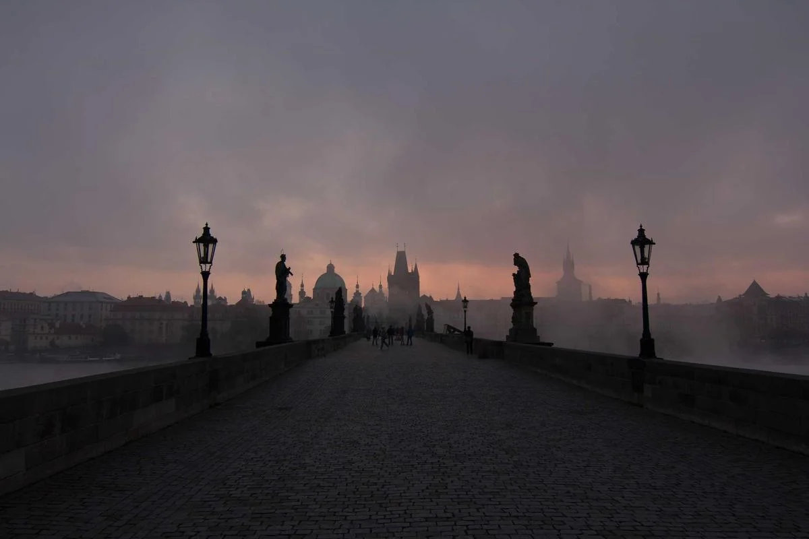
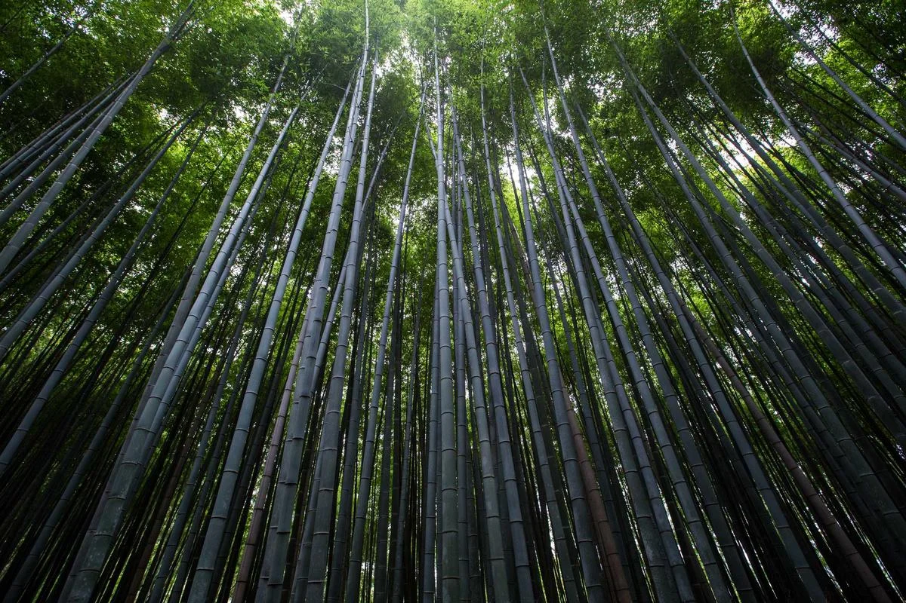
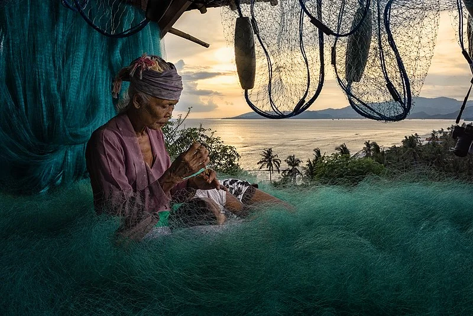
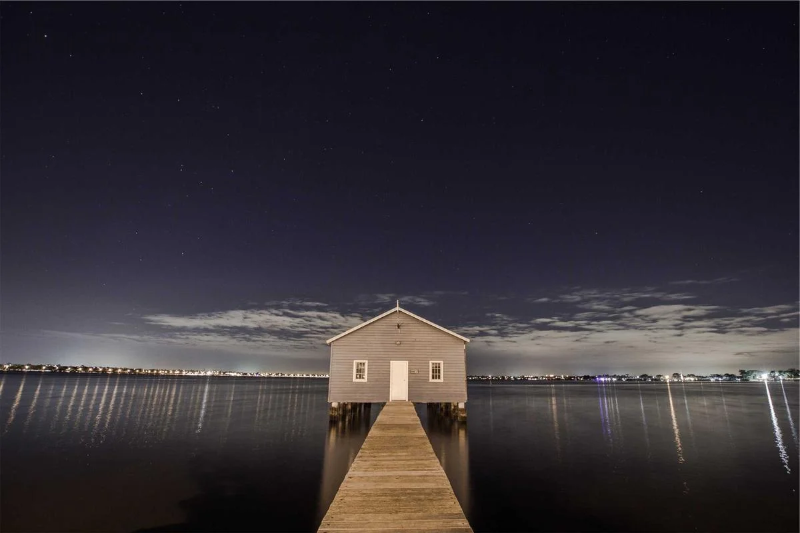
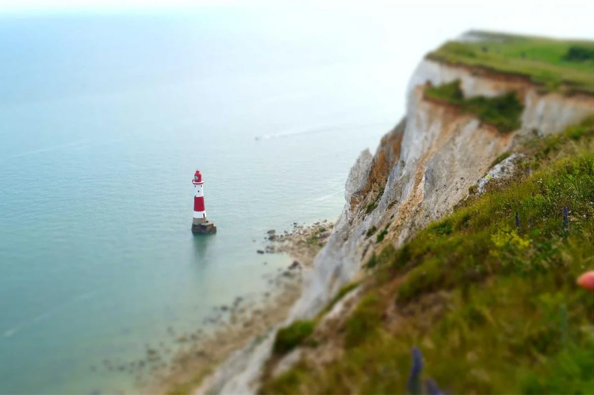
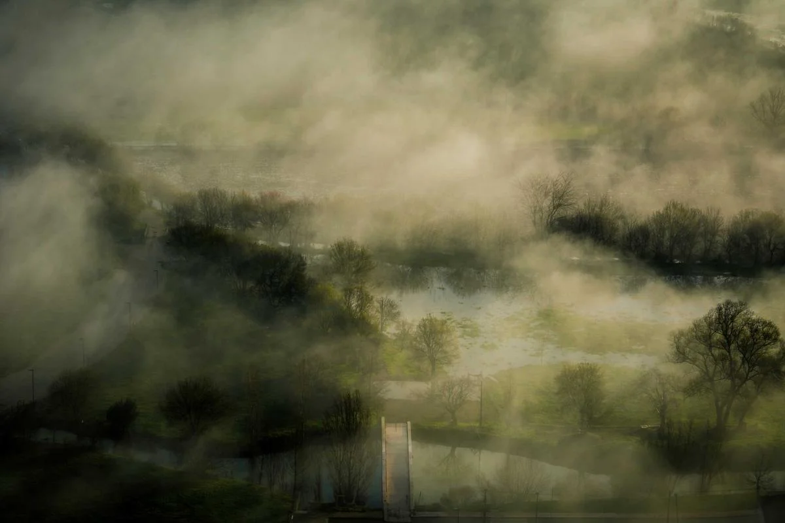
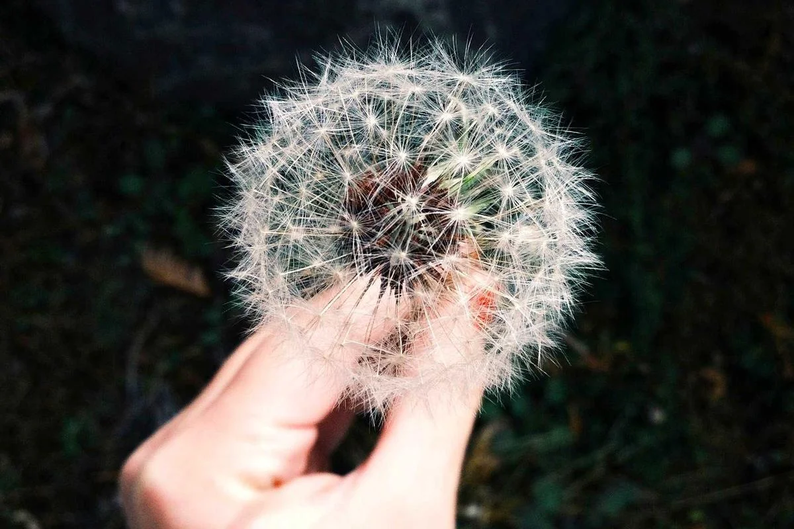

마이리얼트립 할인쿠폰 — 투어/티켓/숙소 최대 30% 할인







❓ 자주 묻는 질문
❓ 짠디다사 발리 커피/차 쇼핑 추천
짠디다사는 쇼핑보다 다이빙과 자연 체험이 중심이에요.
❓ 짠디다사 마사지 가격과 추천 샵은?
짠디다사는 소규모 로컬 마켓만 있어요. 기념품은 우붓에서 미리 사는 게 좋아요.
❓ 짠디다사 로컬 브랜드 쇼핑몰은?
동부 발리는 쇼핑 명소가 적어요.
❓ 짠디다사 아트 마켓에서 흥정 팁은?
짠디다사 시장에서 로컬 과일과 간식을 살 수 있어요.
📍 짠디다사 쇼핑/마사지 추천
1. 짠디다사 로컬 마켓
💰 가격: 다양
📍 위치: 짠디다사
💡 팁: 소규모 로컬 마켓
✍️ 블로거 팁: 동부 발리는 쇼핑 명소가 적어요.
💰 짠디다사 가격 비교 (로컬 vs 투어 vs 호텔)
| 항목 | 💰 로컬 | 🎫 투어 | 🏨 호텔 |
|---|---|---|---|
| 나시파당 | 20,000Rp (약 2,000원) | 40,000Rp (약 4,000원) | 70,000Rp (약 7,000원) |
| 해산물 | 60,000Rp (약 6,000원) | 100,000Rp (약 1,000원) | 160,000Rp (약 1,600원) |
| 다이빙 (1회) | 500,000Rp (약 5,000원) | 700,000Rp (약 7,000원) | 900,000Rp (약 9,000원) |
| 마사지 (1시간) | 60,000Rp (약 6,000원) | 100,000Rp (약 1,000원) | 180,000Rp (약 1,800원) |
※ 로컬 = 직접 방문 시 / 투어 = 투어 포함 시 / 호텔 = 호텔 내 레스토랑 시
🗺️ 짠디다사 추천 명소
- 짠디다사 비치
- 아꿍 화산
- 베사키 사원
- 티르타강가
- 아메드 비치
💎 숨은 명소
💎 숨은 명소: 티르타강가 — 정화의 샘, 현지인 성지라 관광객은 잘 모르는 곳
🚗 짠디다사 교통 정보
| 항목 | 정보 |
|---|---|
| 공항→짠디다사 | 350,000루피아 (차량 90분) |
| 짠디다사 시내 이동 | 스쿠터 70,000루피아 (약 7,000원)/일 |
🏨 짠디다사 숙소 추천
| 등급 | 가격대 |
|---|---|
| 💰 예산형 | 게스트하우스 80,000~150,000루피아 (약 1,500원)/1박 |
| 💰💰 중급 | 비치 방갈로 300,000~800,000루피아 (약 8,000원)/1박 |
| 💰💰💰 고급 | 아메드 비치 리조트 1,500,000루피아 (약 5,000원)~/1박 |
💰 짠디다사 예산 가이드
짠디다사 예산 가이드를 정리하면, 숙소는 예산형 게스트하우스 150,000~300,000Rp (약 3,000원)/1박, 중급 부티크 호텔 500,000~1,500,000Rp (약 5,000원)/1박, 고급 Amankila — 1박 10,000,000Rp~ 수준이에요. 음식은 와룽 파당 나시파당, 짠디다사 해산물 BBQ 정도예요. 1박 2일 기준으로 예산형이면 500,000~800,000Rp(약 50,000~80,000원), 중급이면 1,500,000~3,000,000Rp(약 150,000~300,000원)면 충분해요.
📅 추천 일정: 1박 2일: 베사키 사원(오전) → 티르타강가(오후) → 비치(저녁)
🔑 현지인 꿀팁
동부 발리 코스로 연결하면 이동 시간 절약
💡 실전 팁
- 짠디다사는 소규모 로컬 마켓만 있어요. 기념품은 우붓에서 미리 사는 게 좋아요.
- 짠디다사 시장에서 로컬 과일과 간식을 살 수 있어요.
- 자외선이 매우 강해요. 선크림 SPF50+ 필수, 모자도 추천합니다.
- 생과일 주스가 매우 저렴해요. 아보카도, 망고, 파파야 추천. 15,000~25,000Rp (약 2,000원).
- 와룽(Warung)은 현지 로컬 식당이에요. 가격이 매우 저렴하고 맛도 좋습니다.